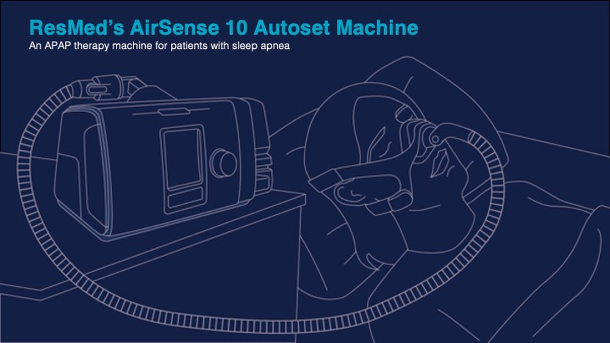

How a sleep apnea machine works
I took my own machine apart on the kitchen table and drew what was inside it.
An APAP machine sits next to a few million beds and almost nobody who uses one could tell you what it does. It is a sealed grey box that hums. I wanted to see whether I could open one up and explain it — partly to know, and partly because explaining a complicated object clearly is the thing I am actually selling.

the opening slide — one continuous line weight, one accent, no fills
The drawing decisions
Everything is line only. No fills, no shading, one weight throughout, on a single dark ground with one cyan accent for anything that is a label rather than an object. That constraint is doing real work: a technical drawing that renders the machine in tonal grey has to compete with itself to show you the hose, the humidifier chamber and the motor at the same time. Reduced to outline, everything is legible at once and the accent colour is free to mean read this.
It also means the whole set stays coherent as it goes from a bedroom scene to an exploded view of a component — the register does not shift when the subject does.
Drawn in Adobe Illustrator, from the actual object rather than from the manual. Manufacturer diagrams are drawn to satisfy a regulator; they tell you what the parts are called, not what they do.
why this one, as a personal project
Nobody commissioned it. It exists because a portfolio of client work only ever shows you what a client asked for, and I wanted a piece that showed the part I am best at without a brief in the way: taking something genuinely complicated, understanding it properly, and getting it onto a page so that someone else understands it too.
A medical device was a good test because there is no room to bluff. If you have not understood how the airflow actually works, the drawing shows it immediately.
what the set covers
Six slides in total, running from the machine in the room where you actually meet it, through the case coming off, to what each part is doing while you are asleep.
One of the six is on this page. The rest are not, and I would rather say so than pad the page out with words about drawings you cannot see.
open to marketing operations, analytics and martech roles
Let’s talk.
Remote, or Albuquerque and hybrid. If you want the architecture behind any of the work here, ask me and I will walk you through it.